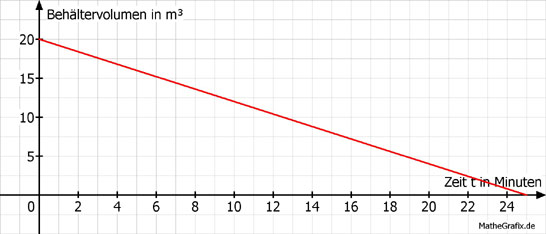

Lineare Funktionen Aufgabe 98 Eine Firma pumpt einen Ölbehälter leer. Nach 9 Minuten enthält er noch 12,8 m³ Öl, nach 15 Minuten noch 8 m³. a) Nach wie vielen Minuten ist der Behälter leer? b) Wie viel m³ Öl waren zu Beginn in dem Behälter? a) 12,8 - 8 4,8 m = ------------- = ------- = - 0,8 m³/min 9 - 15 -6 8 = - 0,8 * 15 + b | +12 b = 20 m³ V = - 0,8 * t + 20  V = 0 0 = - 0,8 * t + 20 | -20 - 20 = - 0,8 * t | : (- 0,8) t = 25 Minuten b) b entspricht dem Behältervolumen zu Beginn = 20 m³